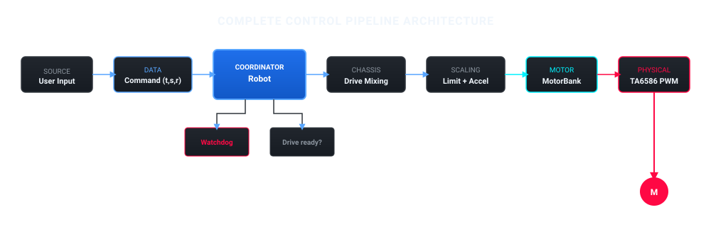
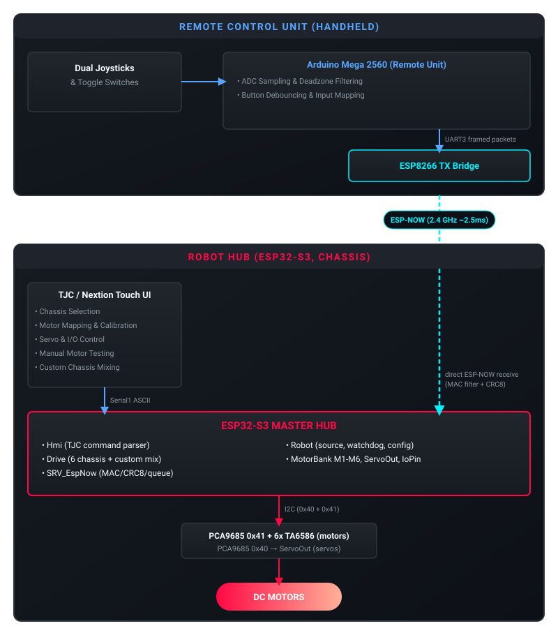

Kiến trúc hệ thống và triết lý thiết kế¶
Tổng quan hệ thống¶
The firmware turns an ESP32-S3 into a plug, configure, play robot controller. One firmware drives many chassis types; the TJC touchscreen chooses the chassis, maps motors to wheels, calibrates directions and saves the result to EEPROM. No rebuild is needed to change the robot.
The ESP32-S3:
Điều khiển khung gầm 2 bánh, tank, omni 4 bánh, mecanum, 6 bánh và khung gầm tùy chỉnh
Chạy sáu động cơ DC (M1 đến M6) và tối đa mười sáu servo qua các chip PCA9685
Dùng các chân số và analog làm ngõ vào hoặc ngõ ra đơn thuần
Takes commands from the TJC touchscreen over UART and from the ESP-NOW remote directly
Dừng mọi động cơ khi mất đường truyền lệnh
Lưu cấu hình robot vào EEPROM
Các tầng¶
TJC touchscreen <-- UART2 --> Hmi parse commands, answer, report configuration
|
Robot choose control source, watchdog, own the configuration
|
Drive chassis mixing, speed scaling, output limits
|
MotorBank M0..M5: run (PWM), brake, stop
|
Pca9685 I2C PWM chip (0x40) + TA6586 motor drivers
ESP-NOW remote -- ESP-NOW --> Robot drive commands from the remote
Servos ServoOut PCA9685 chip 2 (0x41)
Digital / analog pins IoPin in / out only
Mỗi tầng chỉ biết tầng ngay bên dưới nó. Tầng động cơ không biết bánh xe là gì, còn Drive không biết chip nào làm quay động cơ.
Mã nguồn nằm ở đâu¶
Thư mục |
Trách nhiệm |
|---|---|
|
Chip PWM I2C: đặt chu kỳ nhiệm vụ cho một kênh. |
|
|
|
Góc servo trên một kênh PCA9685. |
|
Cấu hình một chân làm ngõ vào hoặc ngõ ra, đọc và ghi chân đó. |
|
Sáu khung gầm có sẵn, trộn tốc độ bánh, giới hạn PWM và giới hạn gia tốc. |
|
Một cấu trúc cấu hình duy nhất với giá trị mặc định, kiểm tra hợp lệ và nạp/lưu EEPROM. |
|
|
Pipeline điều khiển¶


Kiến trúc hệ thống và luồng dữ liệu không dây¶


Triết lý thiết kế¶
Simple: A newcomer should be able to read
src/esp32_hub/Esp32_HubUnit.cppand follow the whole system in a few minutes.Phân tầng: Động cơ chỉ chạy, hãm hoặc dừng. Servo chỉ quay đến một góc. Chân I/O chỉ là ngõ vào hoặc ngõ ra. Mọi thứ khác được xây trên các tầng này.
Cấu hình được: Màn hình cảm ứng quyết định khung gầm, ánh xạ động cơ và các giới hạn. Đây là dữ liệu trong EEPROM, không phải mã.
An toàn mặc định: Nếu khung gầm chưa được gán đủ động cơ hoặc đường truyền lệnh im lặng, động cơ sẽ đứng yên.